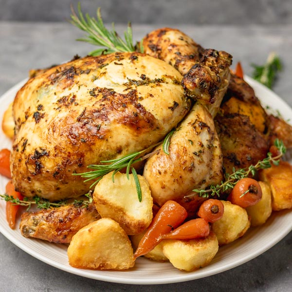

Roasted Chicken

Juicy Roasted Chicken
A simple roasted chicken flavored with garlic, butter and herbs, then oven roasted to a golden, crispy, and juicy perfection!
Ingredients
- 3-to-3 1/2 pound whole broiler-fryer chicken
- 3 tablespoons butter, melted
- 3 cloves garlic, minced
- 3/4 teaspoon salt, or to taste
- 1 teaspoon dried basil
- 1/2 teaspoon dried thyme
- 1/4 teaspoon lemon pepper seasoning, or you can also use fresh ground black pepper
- 1 lemon, quartered
- 3 fresh rosemary springs
- 4 cloves garlic, peeled
Steps
- Preheat oven to 450 degrees F.
- Remove giblets from inside of the chicken's cavity.
- Thoroughly dry the chicken with paper towels.
- Place chicken, breast side UP, on a rack set over a shallow roasting pan or jelly roll pan.
- Brush chicken with melted butter.
- Sprinkle or rub minced garlic all over chicken.
- In a small bowl combine salt, basil, thyme, and lemon pepper; rub onto the chicken.
- Add some salt to the inside of the cavity and fill the cavity with lemon slices, rosemary, and garlic cloves.
- Tie the legs together with kitchen twine, and tuck the wings under the body of the chicken.
- Roast, uncovered, for 10 minutes.
- Reduce oven temperature to 350˚F and continue to cook until done; about 1 more hour and 10 minutes, or until internal temperature of chicken reaches 165˚F.
- Remove from oven and baste the chicken with the juices.
- Let rest for about 15 to 20 minutes before cutting.
Homepage